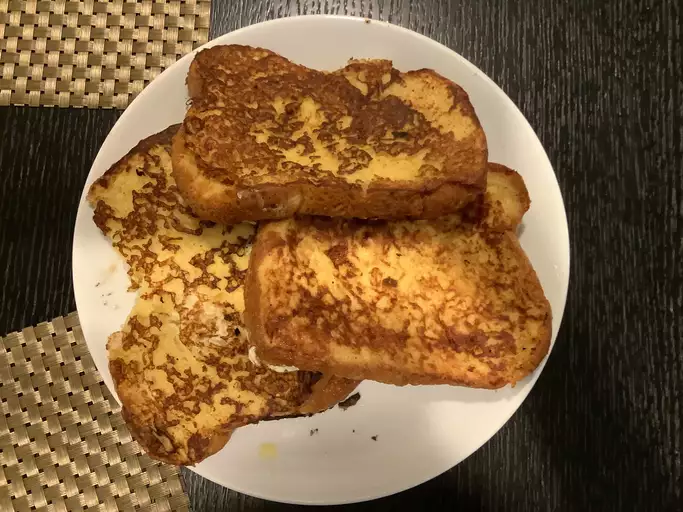

French Toast

Description
"This fabulous French toast recipe works with many types of bread — white, whole wheat, brioche, cinnamon-raisin, Italian, or French! Delicious served hot with butter and maple syrup."
Ingredients
- 2/3 Cup of Milk
- 2 Large Eggs
- 6 Think Slices of Bread
- Salt to taste
- 1 Tablesppon of Unsalted Butter
- 1 Teaspoon of Vanilla Extract (Optional)
- 1/4 Teaspoon of Ground Cinnamon (Optional)
Steps
- Gather all ingredients.
- Whisk milk, eggs, vanilla, cinnamon, and salt together in a shallow bowl.
- Lightly butter a griddle or skillet and heat over medium-high heat.
- Dunk bread in the egg mixture, soaking both sides.
- Transfer to the hot skillet and cook until golden, 3 to 4 minutes per side.
- Serve hot.